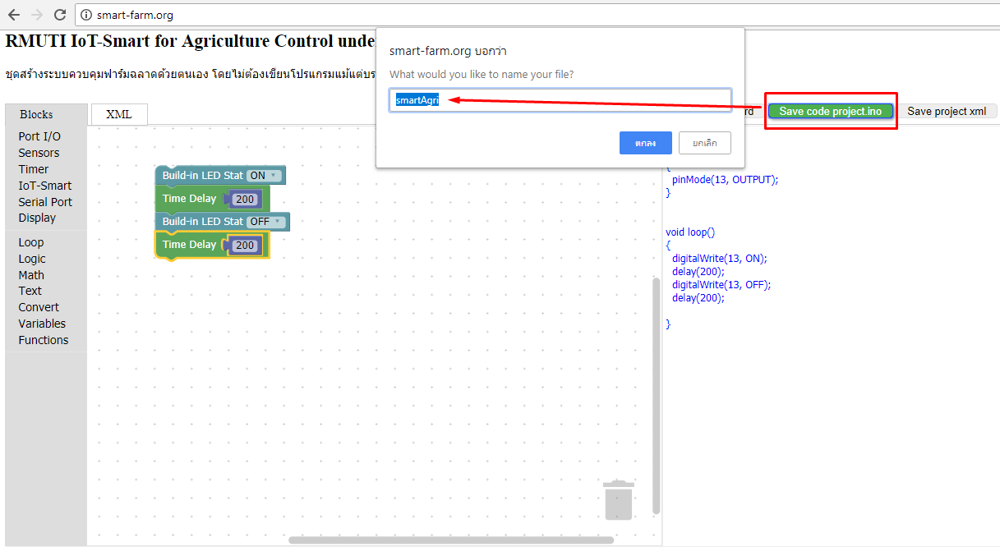

Guide สำหรับผู้เริ่มต้นใช้งาน Smart GUI for agriculture control
Get Started

Blockly คือ Editor ที่ใช้สำหรับเขียนโปรแกรมโดยใช้หลักการต่อบล๊อคคำสั่งที่ต้องลาก-วางคำสั่งเป็นลำดับต่อกันไปคล้ายตัวต่อเลโก้
เรียกอีกอย่างว่าเป็นโปรแกรมเสมือน ซึ่งพัฒนาจากการเขียนโปรแกรมเป็นบรรทัด มีจุดเด่นด้านการใช้กราฟิคช่วยให้ง่ายต่อการเรียนรู้และเข้าใจ
ตัวโปรแกรมเป็น web-based คือสามารถใช้งานผ่านเว็บเบราเซอร์ การใช้งานง่ายมากคือผู้ใช้สามารถลากบล๊อคมาต่อกันเป็นชุดคำสั่งเพื่อสร้างเป็นแอพพลิเคชั่น
ไม่ต้องใช้ทักษะด้านการพิมพ์และไม่ต้องเรียนรู้ syntax ให้ยุ่งยาก
การสร้างแอพแบบ blockly
จากมุมมองของผู้ใช้ Blockly เป็นวิชวลที่ใช้ในการสร้างโค้ด จากมุมมองของนักพัฒนา
ซอฟต์แวร์ Blockly เป็นกล่องข้อความที่มีรหัสที่ผู้ใช้สร้างขึ้นโดย syntactically
บล็อกสามารถส่งออกบล็อกไปยังหลายภาษารวมถึงตัวเลือกยอดนิยมเหล่านี้:
→ JavaScript
→ Python
→ PHP
→ Lua
ต่อไปนี้เป็นการวิเคราะห์ระดับสูงเกี่ยวกับสิ่งที่จะเข้าสู่การสร้างแอปพลิเคชัน
→ โดยรวม Blockly เป็น editor ที่ง่ายที่สุดประกอบด้วยกล่องเครื่องมือเพื่อจัดเก็บประเภทของบล็อกและพื้นที่ทำงานสำหรับการจัดบล็อก
เรียนรู้เพิ่มเติมเกี่ยวกับการรวม Blockly ในเอกสารเริ่มต้นใช้งานสำหรับเว็บหรือ Android
→ สร้างบล็อกของแอพ เมื่อคุณมีแอ็พพลิเคชัน Blockly แล้วคุณจะต้องสร้างบล็อคเพื่อให้ผู้ใช้สามารถเขียนโค้ดด้วยแล้วเพิ่มลงในกล่องเครื่องมือที่ถูกบล็อกของคุณ
เรียนรู้วิธีการสร้างภาพรวม Blocks Custom
→ สร้างส่วนที่เหลือของแอปพลิเคชัน ด้วยตัวเอง Blockly เป็นเพียงวิธีในการสร้างโค้ด
หัวใจของแอพของคุณคือการตัดสินใจว่าจะทำอย่างไรกับโค้ดนั้น
จุดแข็งของ Blockly และตัวเลือกอื่น ๆ
→ สามารถแยกโค้ดออกได้ ผู้ใช้สามารถแยกโปรแกรมที่ใช้บล็อกเป็นภาษาโปรแกรมทั่วไปและเปลี่ยนไปใช้การเขียนโปรแกรมแบบข้อความได้อย่างราบรื่น
→ ซอฟแวร์รหัสเปิด ทุกอย่างเกี่ยวกับ Blockly คุณสามารถปรับปรุงแก้ไขและใช้ในเว็บไซต์ของคุณเองและแอพ Android ได้
→ สามารถปรับแต่งให้เหมาะกับความต้องการของคุณโดยการเพิ่มบล็อคที่กำหนดเองสำหรับ API ของคุณหรือลบบล็อกและฟังก์ชันที่ไม่จำเป็นออกไปได้
→ มีความสามารถสูง ไม่ได้เป็นของเล่น คุณสามารถใช้งานการเขียนโปรแกรมที่ซับซ้อนเช่นการคำนวณค่ามาตรฐานในบล็อกเดียวได้
→ Blockly ได้รับการแปลเป็นภาษาต่างๆกว่า 40 ภาษารวมทั้งเวอร์ชันขวาไปซ้ายสำหรับภาษาอาหรับ และ Hebrew (อิสราเอล)

Blockly สามารถประกอบเป็นโปรเจคที่เป็นประโยชน์ได้หลากหลายแนวทาง รวมไปถึงเครื่องมือที่ช่วยด้านการศึกษา
โค้ดทุกส่วนสามารถนำไปใช้งานหรือพัฒนาต่อได้ฟรี เว็บไซต์ของ Blockly : Get Started Blockly
ซึ่งเราพัฒนาต่อจาก BlocklyDuino : GitHub BlocklyDuino Webpage
How to use Blockly GUI
สำหรับวิธีการใช้ Blockly นั้นเพียงเลือกแถบเมนูด้านซ้ายมือและ "คลิกซ้าย" ลากวางลงบนจอ จากนั้นจะปรากฏ โค้ดสำหรับนำไปใช้งานบน Arduino IDE
การต่อกันของ Blockly จะต่อกันจากบนลงล่าง โค้ดจะเรียงจากบนลงล่างเช่นกัน
การใส่อินพุตของ Blockly
การสร้างตัวแปรจำนวณเต็มของ Blockly เราจะได้ตัวแปรที่ชื่อ item และสามารถนำอินพุต item ด้านล่าง set item ไปใช้งานได้
การลบ Blockly ออกง่ายมากๆเพียงแค่ลาก Block ไปวางที่ ถังขยะ
How to Copy code to clipboard
สำหรับวิธีการคัดลอกโค้ดไปยัง clipboard เป็นการ คัดลอกโค้ดที่ปรากฏอยู่ในหน้าต่าง Your Code# ไปใช้งานหรือเก็บไว้ตามต้องการ
How to Discard
สำหรับวิธีการละทิ้งโปรเจคที่เราสร้างจาก Blockly เป็นการเริ่มทำโปรเจคใหม่นั้นเอง
How to save project arduino file ino
สำหรับวิธีการบันทึกไฟล์ Arduino โปรเจคที่เราสร้างจาก Blockly ให้คลิกที่ปุ่ม "Save code project.ino" และตั้งชื่อ smartAgri จากนั้นกด "ตกลง" เราจะได้ไฟล์ smartAgri.ino ที่โฟลเดอร์ Download

How to save projectXml
สำหรับวิธีการบันทึกไฟล์โปรเจคที่เราสร้างจาก Blockly เป็นไฟล์โปรเจครูปแบบของ Xml เราสามารถเก็บโปรเจคขึ้นมาปรัปปรุงแก้ไขใหม่ได้ ให้คลิกที่ปุ่ม "Save project xml" และตั้งชื่อเป็น "smartAgriXml" จากนั้นกดตกลง เราจะได้ไฟล์ smartAgriXml.xml ที่โฟลเดอร์ Download
How to load projectXml
สำหรับวิธีการโหลดไฟล์โปรเจคที่เราสร้างจาก Blockly เป็นไฟล์โปรเจครูปแบบของ Xml เราสามารถโหลดโปรเจคขึ้นมาปรัปปรุงแก้ไขใหม่ได้ ให้คลิกที่ปุ่ม "Load project xml" ที่ชื่อว่า "smartAgriXml" จากนั้นกด "Open" เราจะได้โปรเจคที่เราสร้างไว้กลับมา
Example Serial Monitor Display
ตัวอย่างการทดสอบแสดงข้อความบน Serial Monitor ที่อยู่บนโปรแกรม Arduino IDE : Download Example
Example LCD Show RealTime Display
ก่อนที่เราจะใช้ LCD เราต้องโหลด LCD Display 16x2+I2C Library ก่อนถึงจะใช้งานได้ ขั้นตอนการดาวน์โหลดคลิก : How to Install และสามารถดาวน์โหลด Library ได้คลิก Download Library โหลดตัวอย่างโปรเจค : Download Example
Example Max7219 Show RealTime Display
ก่อนที่เราจะใช้ Max7219 เราต้องโหลด Max7219 Display Max7219 Library ก่อนถึงจะใช้งานได้ ขั้นตอนการดาวน์โหลดคลิก : How to Install และสามารถดาวน์โหลด Library ได้คลิก Download Library โหลดตัวอย่างโปรเจค : Download Example
Example Arduino Nano Buildin LED
ตัวอย่างการทดสอบไฟกระพริบ LED ที่อยู่ภายในบอร์ด Arduino Nano : Download Example
Example NodeMCU/ESP8266 SendAPI to ThinkSpeak
ตัวอย่างการทดสอบรับข้อมูลจาก UART เพื่อส่งข้อมูลไปยัง ThingSpeak : Download Example